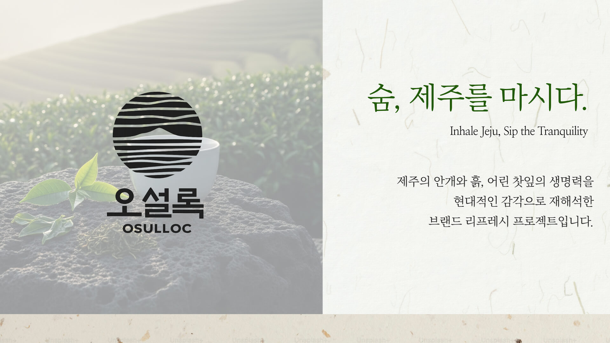
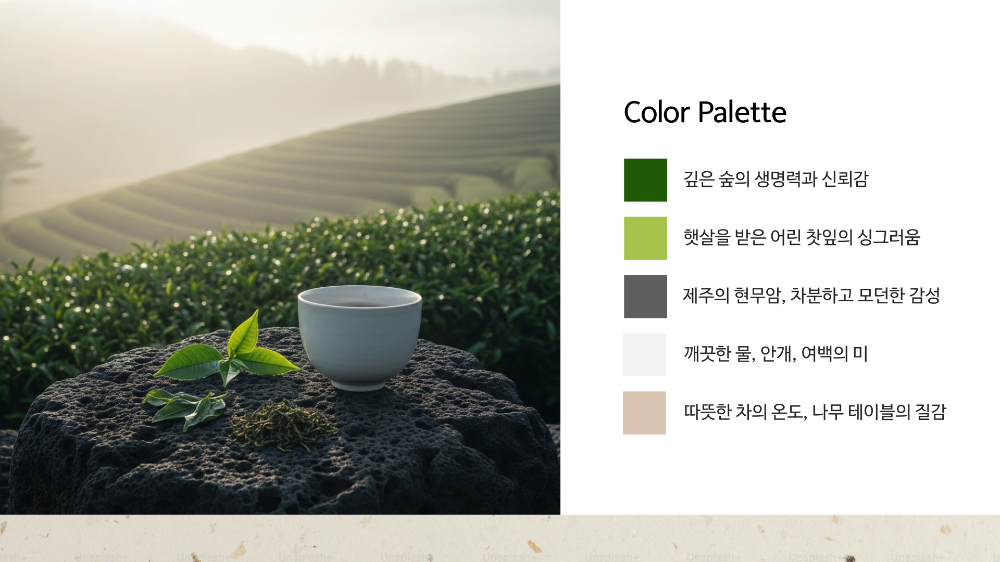
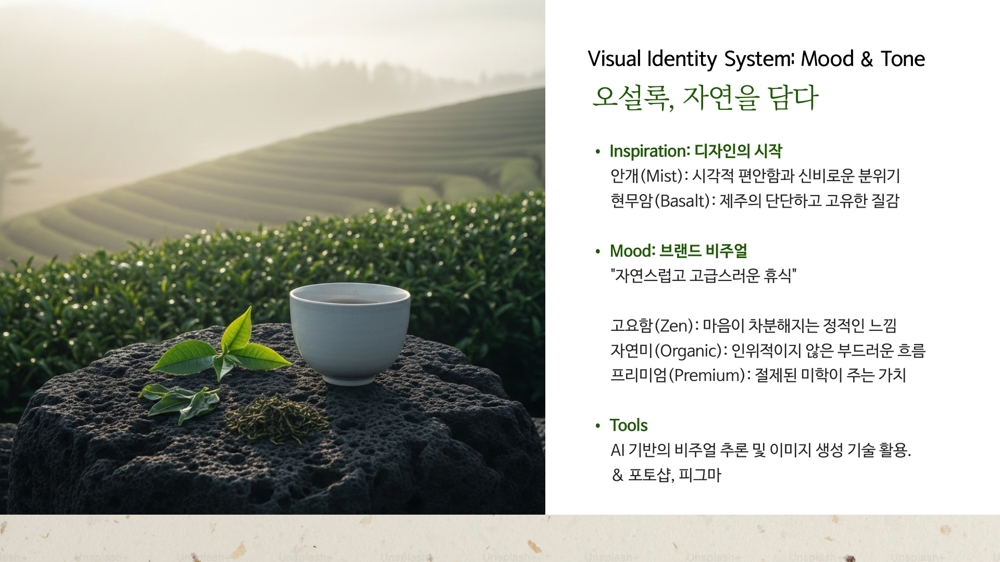

브랜딩 / 비주얼콘텐츠 / 영상
오설록
프로젝트 정보
역할
AI 이미지 생성 및 브랜드 컨셉 영상 기획·제작
연도
2026
유형
개인프로젝트
분야
브랜딩, 비주얼 콘텐츠, 영상
기여도
100%
프로젝트 개요
기존 오설록의 자연·청정 이미지를 유지하면서도, 보다 현대적이고 세련된 프리미엄 무드로 확장하기 위한 브랜드 리프레시 프로젝트입니다. ‘숨, 제주를 마시다’라는 슬로건을 중심으로 제주의 안개, 흙, 어린 찻잎의 생명력을 시네마틱 영상 언어로 재해석했습니다. ★AI 기반 비주얼 프로덕션을 활용하여 이미지 생성부터 영상 연출, 사운드 구성, 카피라이팅까지 브랜드 감성 전반을 직접 기획·디렉팅했습니다.★
프로젝트 완성
영상이 포함되어 있어 로딩에 약간의 시간이 소요될 수 있습니다. 잠시만 기다려 주세요!



주요작업
작업 설명 1. 브랜드 컨셉 기획 - ‘숨, 제주를 마시다’ 슬로건 도출 - 자연·안개·한지 질감을 모티브로 무드 방향 설정 - 브랜드 리프레시 콘셉트 정의 2. AI 이미지 디렉팅 - 미드저니&프리픽 기반 자연/제품 비주얼 생성 - 한지 배경 및 질감 커스터마이징 - 제품 합성 및 비율 조정 3. 영상 연출 및 무빙 설계 - 카메라 슬라이드 무빙 설계 - 슬로우 모션 컷 구성 - 자연광 및 연기 효과 연출 디렉팅 4. 편집 및 사운드 구성 - CapCut 기반 컷 편집 - 자연 바람/환경음 중심의 사운드 설계 - 브랜드 톤에 맞춘 영상 리듬 구성 5. 전체 비주얼 브랜딩 정리 - 타이포그래피 구성 - 컬러 톤 보정 - 프리미엄 무드 일관성 유지
인사이트
AI 기반 제작 방식은 빠른 시각화와 다양한 무드 테스트에 효과적이었으며, 브랜드 톤을 유지하면서도 새로운 비주얼 방향을 실험할 수 있는 가능성을 확인했습니다.